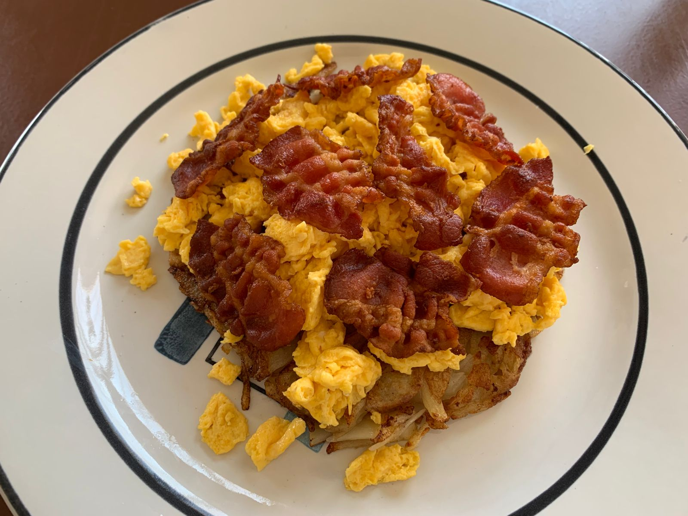

Classic Hash Brown with Eggs & Bacon Recipe
If you're feeling like cooking something more classic that you can't get wrong, this is the recipe for you.

Ingredients
- 3 slices of thick cut bacon, cut in half
- 2 potatoes
- Salt
- 3-4 eggs
Method
This is the method of preparation.
- Add in your bacon to a cold and let the fat render out as it heats up.
- In the meantime, grate your potatoes and add a little salt. Squeeze out all the water from the potatoes.
- Pour some of the bacon fat aside but leave some in the pan (about 2-3 tablespoons).
- Add shredded potatoes to the pan and shape it however you like.
- Flip once golden brown and add more fat if necessary. Let the other side get golden brown. Remove from the pan.
- On another pan on medium-high heat, add 1-2 teaspoons of bacon fat and add the eggs to scramble.
- Finally, top your hash brown with some crumbled bacon, your scrambled eggs, and some sauerkraut if you have!
Return to home page